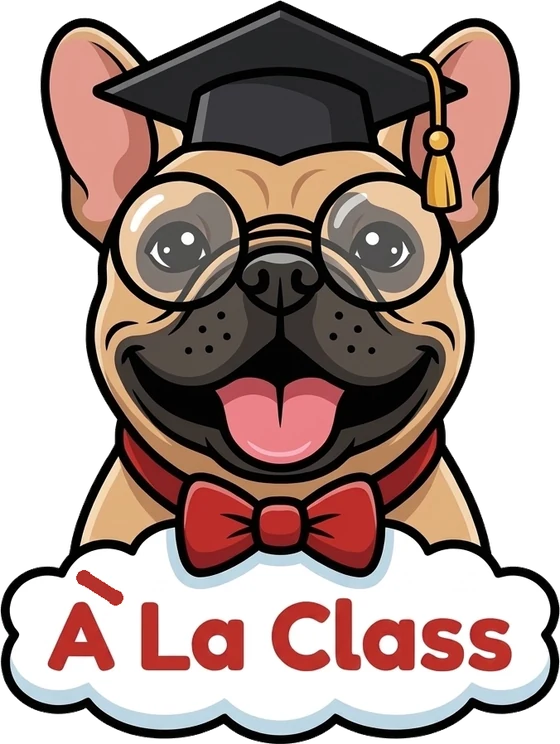
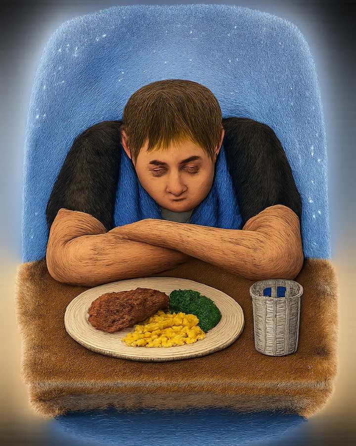
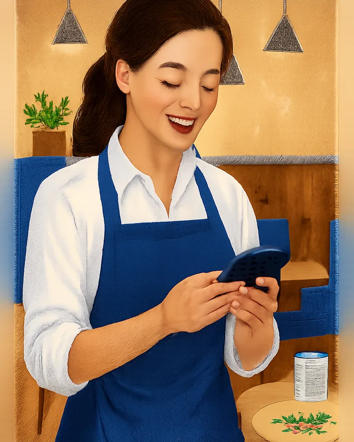
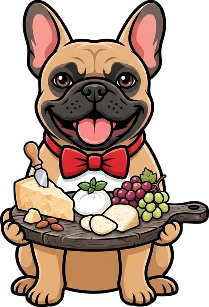
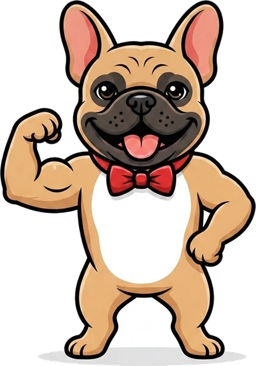
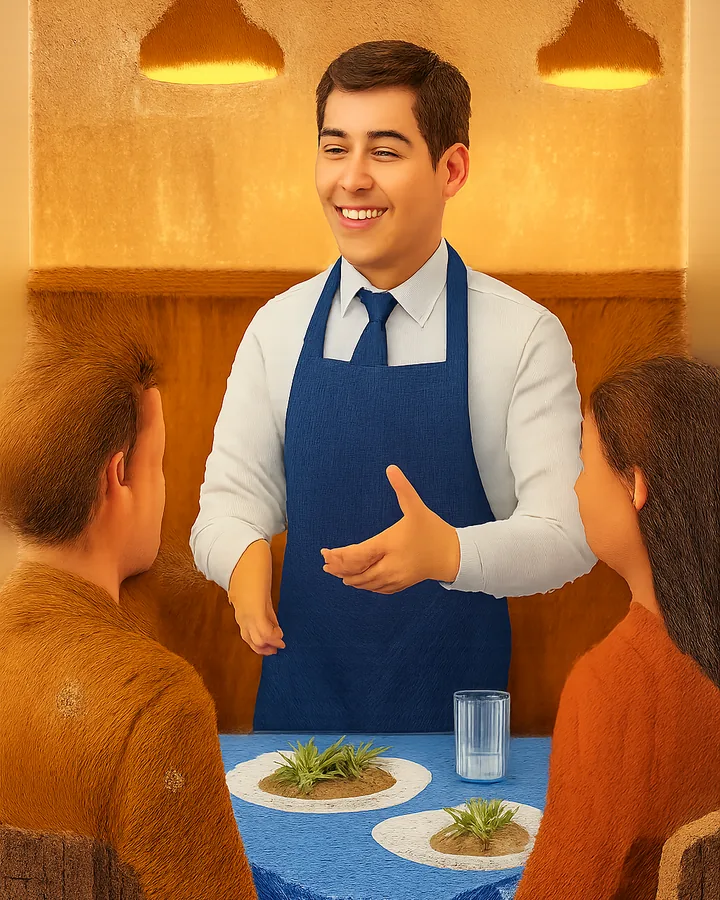

At the end of a 10-hour shift, staff have no energy left to learn.
See it, believe it

The team didn’t sign up to study and are shocked by the volume of knowledge they need. Afraid of learning, they avoid guest interaction…

Your very own furry friend. Every day, Tiff helps you snack on the information overload!


“Hi there, I’m Tiff. Together we will cake-walk through this ocean of jargon. Let’s go!”

To get your restaurant signed up, get in touch: